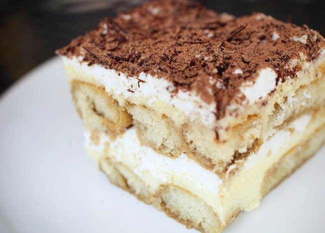

Tiramisu

Description
Done correctly, a classic tiramisù can be transcendent. A creamy dessert of espresso-soaked ladyfingers surrounded by lightly sweetened whipped cream and a rich mascarpone, tiramisù relies heavily on the quality of its ingredients. If you don’t have a barista setup at home, pick up the espresso at a local coffee shop, or use strongly brewed coffee. As for the ladyfingers, make your own or buy them, but keep in mind that store-bought varieties can range from soft and spongy (like angel food cake) to hard and crunchy (like biscotti). Both kinds will work here, but if you're using the softer variety, stick to a light brushing of espresso, instead of a deep dip.
Ingredients
- 6 egg yolks
- ¾ cup white sugar
- ⅔ cup milk
- 1¼ cups heavy cream
- ½ teaspoon vanilla extract
- 1 pound mascarpone cheese, at room temperature
- ¼ cup strong brewed coffee, at room temperature
- 2 tablespoons rum
- 2 (3 ounce) packages ladyfinger cookies
- 1 tablespoon unsweetened cocoa powder
Steps
- In a medium saucepan, whisk together egg yolks and sugar until well blended. Whisk in milk and cook over medium heat, stirring constantly, until mixture boils. Boil gently for 1 minute, remove from heat and allow to cool slightly. Cover tightly and chill in refrigerator 1 hour.
- In a medium bowl, beat cream with vanilla until stiff peaks form.
- Whisk mascarpone into yolk mixture until smooth.
- Arrange half of soaked ladyfingers in bottom of a 7x11 inch dish. Spread half of mascarpone mixture over ladyfingers, then half of whipped cream over that. Repeat layers and sprinkle with cocoa. Cover and refrigerate 4 to 6 hours, until set.